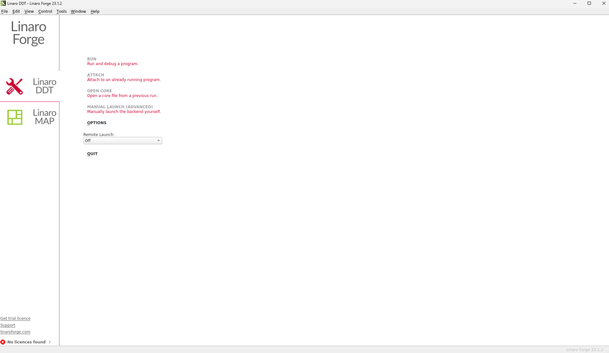
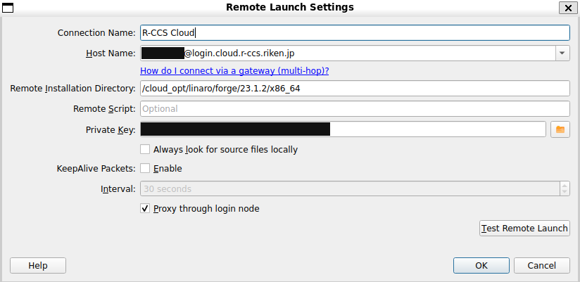
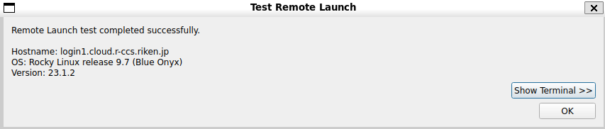
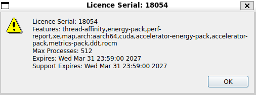
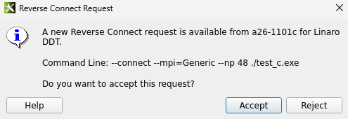
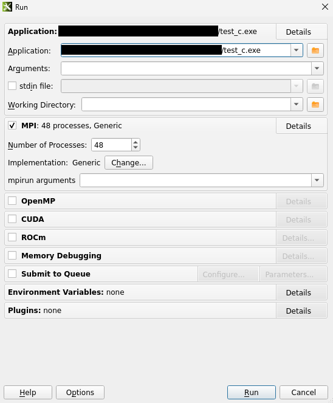
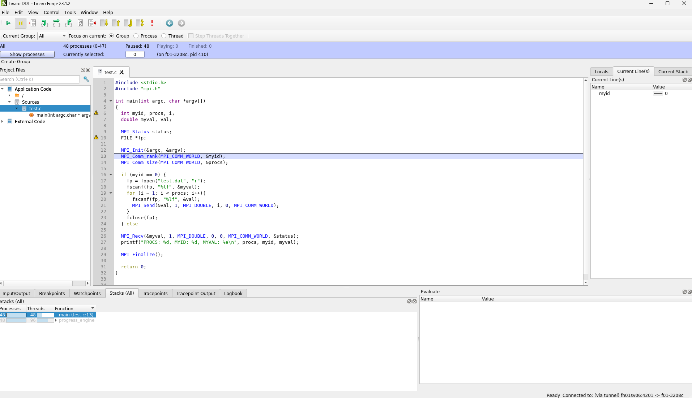
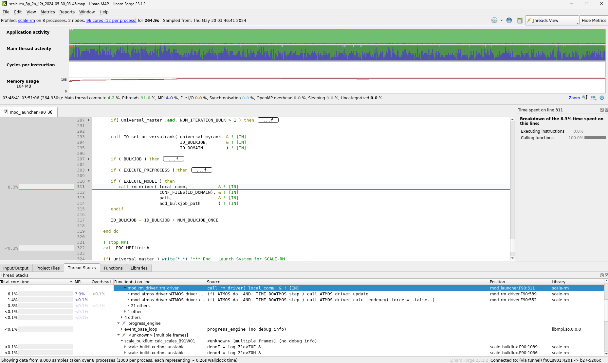

6. Linaro Forge利用ガイド
6.1. 概要
Linaro ForgeはC/C++、Fortran、Pythonで書かれた並列プログラムのデバッグおよび性能解析をGUIで行えるツールです。ここではR-CCSクラウド上で、Linaro Forgeを利用したプログラムの実行方法を示します。
Linaro Forgeに関する詳細な情報は、https://www.linaroforge.com/等を参考にしてください。
6.2. クライアントのインストール
2026年3月現在、R-CCSクラウドにはLinaro Forge バージョン23.1.2がインストールされています。 インストール先は/cloud_opt/linaro/forge/23.1.2/です。
Linaro Forgeを利用するには各ユーザがクライアントアプリケーションをインストールする必要があります。Linaro ForgeクライアントのインストールはWindows、Mac、Linuxそれぞれで行うことができます。ご利用のOSに合わせてクライアント用ファイルを公式サイトからダウンロードし、インストールしてください。Linaro Forgeを利用するには、インストールされているバージョンを揃える必要があることに注意ください。
| OS | クライアント用ファイル |
|---|---|
| Windows | linaro-forge-client-23.1.2-windows-x86_64.exe |
| Mac | linaro-forge-client-23.1.2-macos-x86_64.dmg |
| Linux | linaro-forge-23.1.2-linux-x86_64.tar |
| linaro-forge-23.1.2-linux-aarch64.tar | |
| linaro-forge-23.1.2-linux-ppc64le.tar |
6.3. クライアント設定
以降の設定、実行についてはOSによる差異があまりないため、Linux版を用いてまとめて解説します。
クライアントの起動に成功すると、下図のような画面が表示されます。 「Remote Launch」のプルタブから「Configure」を選択し、「Add」で新しい接続設定を追加します。

「Remote Launch」の設定項目では、「Host Name」「Remote Installation Directory」「Private Key」の入力が必須です。

各入力項目は以下のように設定してください。
| 設定項目 | 入力内容 |
|---|---|
| Host Name | {ユーザID}@login.cloud.r-ccs.riken.jp |
| Remote Installation Directory | /cloud_opt/linaro/forge/23.1.2/x86_64 (クライアントがx86_64版の場合） |
/cloud_opt/linaro/forge/23.1.2/aarch64 (クライアントがaarch64版の場合） | |
| Private Key | R-CCSクラウドのログインノードにSSH接続する際に使用する秘密鍵のパス |
設定が完了したら、「Test Remote Launch」ボタンで接続テストを行うことができます。 正常に接続テストが成功した場合、下図のように表示されます。

接続設定を作成し、「Remote Launch」で作成した設定を選択すると、R-CCSクラウドへ接続します。 接続に成功した場合、起動画面の左下にあるライセンス番号が「18054」と表示され、下図のように詳細なライセンス情報を取得できるようになります。

一度接続設定を作成すれば、再度起動した時には作成済みの設定を選択するだけで接続できるようになります。
6.4. 実行方法
ここではLinaro Forgeを利用したテストプログラムによるR-CCSクラウドでの実行方法を示します。
前項のクライアント設定でR-CCSクラウドに接続しておき、Linaro ForgeのReverse Connect機能を用いてジョブからクライアントへ接続します。 ジョブは以下のような形で記述します。例ではLinaro DDTを起動します。
#!/bin/sh #SBATCH --job-name=GPU-test #SBATCH --partition=qc-gh200 #SBATCH --time=01:00:00 # module load system/qc-gh200 module load nvhpc # LinaroForge . /cloud_opt/linaro/setup-env.sh # run ddt --connect --mpi="Generic" --np 48 ./test_c.exe
ジョブが実行されると、下図のようにクライアント画面に応答を要求するメッセージが表示されます。

応答を許可すると、実行アプリケーションの情報を取得でき、Runボタンを押すことで実行を開始します。

アプリケーションが実行されると、Linaro Forgeの画面が下図のようになります。 以降はGUIデバッガとしてアプリケーションのデバッグを行うことができます。

Linaro DDTと同様に、Linaro MAPを使用することも可能です。 その場合、ddtではなくmapを指定します。
#!/bin/sh #SBATCH --job-name=GPU-test #SBATCH --partition=qc-gh200 #SBATCH --time=01:00:00 # module load system/qc-gh200 module load nvhpc # LinaroForge . /cloud_opt/linaro/setup-env.sh # run map --connect --mpi="Generic" --np 48 ./test_c.exe
アプリケーションが実行されると、Linaro Forgeの画面が下図のようになります。 以降はGUI性能解析ツールとしてアプリケーションの分析を行うことができます。 一度MAPが正常に実行されるとmapファイルが生成されるので、それを再度読み込むことでジョブを実行せずに分析をし直すこともできます。

注意点として、R-CCSクラウドで使用可能なLinaro Forgeの最大プロセス数は512となっています。これはLinaro Forgeを使用する全ユーザで共有する数値です。1人が512プロセスを利用するプログラムを実行した場合、その他のユーザはライセンスが解放されるまで待機することになります。現在は1人あたりのプロセス利用数に制限は設けませんが、節度ある利用をお願いいたします。